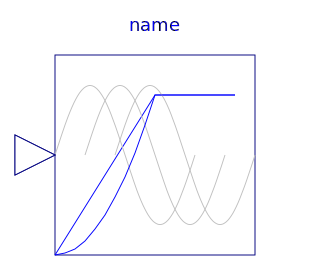
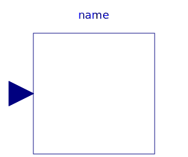
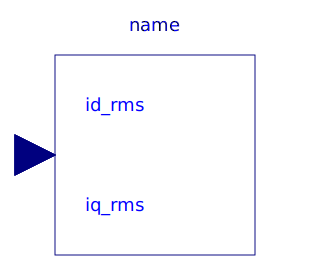
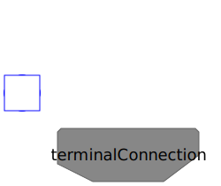

| Name | Description |
|---|---|
| Parameter records | |
|  VfController | Voltage-Frequency-Controller |
|  ToDQ | Transform instantaneous stator inputs to rotor fixed space phasor |
| FromDQ | Transform rotor fixed space phasor to instantaneous stator quantities |
|  CurrentController | Current controller |
| VoltageController | Voltage controller |
| Y-D-switch | |
|  TerminalBox | Terminal box Y/D-connection |
| Terminal box Y/D-connection | |
| Rheostat which is shortened after a given time | |
| Rheostat with linearly decreasing resistance | |
|
|
Computes machine parameter from usual datasheet |
| Calculates Impedances from nominal values |